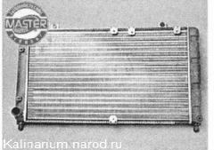

Радиатор системы охлаждения двигателя снятие и установка
Для выполнения работы потребуется смотровая канава или эстакада.
Снятие
1. Сливаем охлаждающую жидкость.
2. Снимаем электровентилятор.
3. Пассатижами расшплинтовываем хомут и отсоединяем пароотводящий шланг радиатора 2. Крестовой отверткой ослабляем затяжку хомутов крепления верхнего и нижнего шлангов радиатора 1 и 3, снимаем шланги с патрубков радиатора.
Совет
Ленточный хомут замените более надёжным (например, винтовым).
4. Ключом на 10 мм отворачиваем две гайки крепления радиатора.
5. Аккуратно извлекаем радиатор из моторного отсека.

6. При необходимости снимаем с радиатора две резиновые опоры и выворачиваем пробку сливного отверстия с прокладкой

Установка
Совет
Если радиатор был в эксплуатации, то перед установкой очистите его снаружи от грязи. Промойте его внутреннюю полость с моющим средством для системы охлаждения, а снаружи струей воды.
1. При замене радиатора переставляем на новый радиатор резиновые опоры и пробку сливного отверстия с прокладкой (если на новом радиаторе они отсутствуют).
2. Устанавливаем радиатор на место в последовательности, обратной снятию.
3. Устанавливаем электровентилятор и соединяем колодки жгутов проводов.
4. Заполняем систему охлаждения двигателя жидкостью.
5. Убеждаемся в отсутствии подтекания охлаждающей жидкости в местах соединений. При необходимости подтягиваем хомуты крепления шлангов.